Sobre o projeto
A importância de ajudar organizações não governamentais (ONGs) reside na capacidade dessas instituições em desempenhar um papel crucial na promoção do bem-estar social, na mitigação de problemas globais e na construção de comunidades mais justas e sustentáveis. A colaboração entre governos, setor privado e indivíduos é essencial para enfrentar os desafios complexos que enfrentamos como sociedade global. Considerando esses pontos, o projeto nasceu como uma forma de auxiliar pessoas que querem ajudar a mudar o mundo, mas não sabem por onde começar. Aqui você encontra diversas ONGs e como ajudar. Juntos somos mais fortes!
Como ajudar?
Doando tempo
Que tal dar um rolê diferente e investir tempo para mudar vidas? Ajudar ONGs é mais fácil do que pedir delivery! Seja um voluntário, participe de eventos ou ajude online – as opções são tão flexíveis quanto o seu horário de almoço. Sem dramas, só vibes positivas. Faça parte dessa corrente do bem e deixe sua marca!
Divulgando
Bora fazer barulho pelo bem! Usar a divulgação nas redes sociais é tipo ser o herói das ONGs. Compartilhe causas, eventos e histórias inspiradoras. Hashtags são suas superpoderosas aliadas, então abuse! Transforme sua timeline numa vitrine de solidariedade.
Doando alguma quantia
Bora fazer a grana ser o superpoder das ONGs! Soltar uns trocados é mais fácil do que pedir um café. Escolha uma causa que faça seu coração bater mais forte, encha o carrinho virtual e seja o herói sem capa que essas organizações precisam. Afinal, ajudar não precisa ser complicado, só é preciso um clique e um coração generoso
Conheça algumas ONGs
ETAPAS

A Etapas, na sua Política de Proteção à Crianças e Adolescentes (PPCA), considera as crianças e adolescentes como sujeitos de direitos, em fase de desenvolvimento, na condição de vulnerabilidade, com direitos e deveres individuais e coletivos que devem ser resguardados.
SAIBA MAISPÃO DOS POBRES
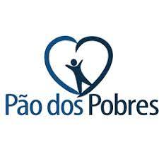Atualmente, o Pão dos Pobres atende 1,4 mil crianças e adolescentes em seus projetos. A missão da instituição é potencializar o desenvolvimento integral dessas crianças e adolescentes numa perspectiva solidária, construída por meio de práticas socioeducativas.
SAIBA MAISAURA
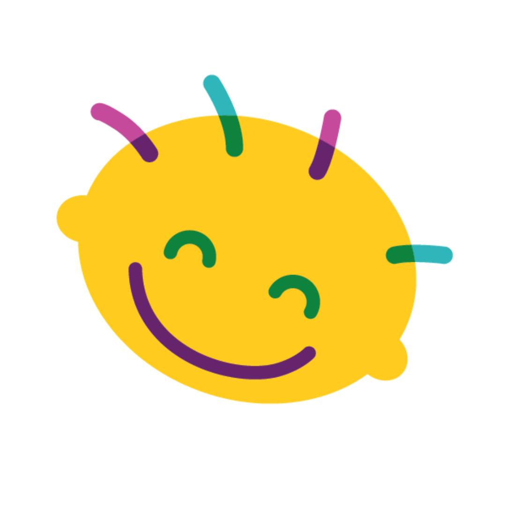A Casa de Apoio Aura é uma instituição de Belo Horizonte que atende crianças e adolescentes com câncer de todo o estado de Minas Gerais. Fundada em 1998, promove suporte terapêutico global às crianças e apoio às suas famílias, através de uma equipe multidisciplinar: médicos, odontólogos, enfermeiros, psicólogos, assistentes sociais, fisioterapeutas, fonoaudiólogos e nutricionistas.
SAIBA MAISTAMO JUNTAS

Organização feminista composta por mulheres profissionais que atuam voluntariamente na assistência multidisciplinar a mulheres em situação de violência e que possui voluntárias em diversas regiões do Brasil.
SAIBA MAISAMAC
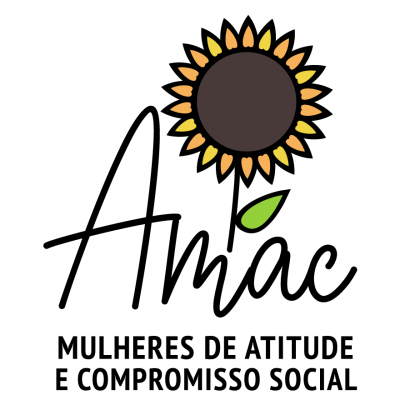A AMAC desenvolve suas atividades no estado do Rio de Janeiro, com sede no município de Duque de Caxias, também fazendo atendimentos via redes sociais para todo o Brasil, tendo como objetivo principal a defesa e garantia de direitos da mulher e famílias vítimas de violência doméstica.
SAIBA MAISAGATHA
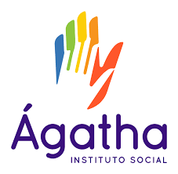Desde 2015, o Instituto Social Ágatha traz luz e esperança ao estado de Sergipe. Somos mais do que uma organização – somos um movimento incansável pela transformação social e pela justiça, direcionado pela visão de resgatar e celebrar as mulheres em situação de vulnerabilidade. Nossa missão é muito mais do que palavras; é a essência do que acreditamos e do que nos impulsiona todos os dias.
SAIBA MAISCRIOLA

Seguindo os passos das nossas ancestrais, Criola completou 30 anos de história em 2022. Nas três décadas de nossa existência, nos dedicamos ao enfrentamento do racismo patriarcal cisheteronormativo e à defesa dos direitos das meninas e mulheres negras cis e trans, criando políticas e pontes seguras para alcançar a justiça e o bem viver.
SAIBA MAISFOPIR
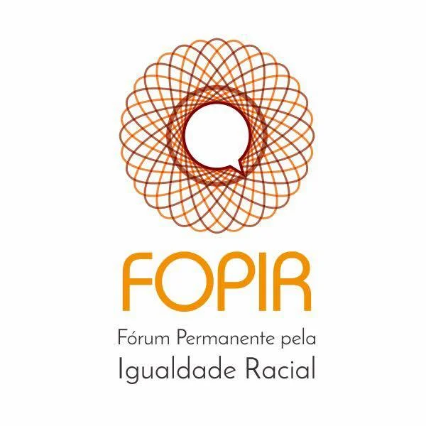É uma coalização de organizações antirracistas que desenvolve estratégias e ações de mobilização, comunicação e incidência política com o objetivo de enfrentar o racismo e promover a igualdade racial e de gênero. Busca ter um impacto em governos, parlamentares, formuladores e operadores de políticas públicas, e mídia, por um estado democrático e inclusivo.
SAIBA MAISAGBARA
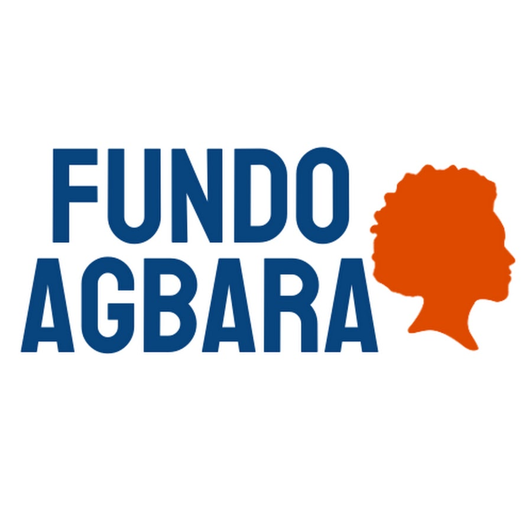O Fundo Agbara é o primeiro fundo de mulheres negras do Brasil. Uma organização antirracista e sem fins lucrativos gerida por nove mulheres negras que tem como missão a potencialização de iniciativas de empreendedoras negras periféricas, da Região Metropolitana de Campinas.
SAIBA MAISCASA1

Fundada em 2017, a Casa 1 é um projeto de sociedade civil que tem como propósito a acolhida de jovens entre 18 e 25 anos que foram expulsos de casa pela família por suas orientações afetivas sexuais e identidade de gênero. O trabalho corre em paralelo às atividades do Centro Cultural e da Clínica Social, com todos os serviços ofertados gratuitamente.
SAIBA MAIS+DIVERSIDADE
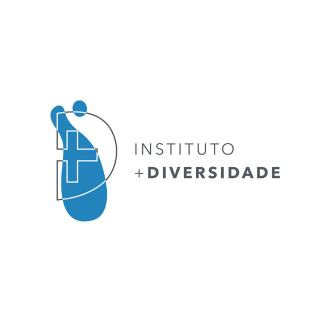Somos uma organização sem fins lucrativos que mobiliza recursos para articular soluções de alto impacto social. Os projetos sob nossa responsabilidade têm como objetivo a geração de oportunidades que empoderem profissionalmente a comunidade LGBTQIA+ de todo o Brasil.
SAIBA MAISETERNAMENTESOU
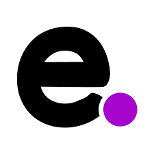Uma associação sem fins lucrativos que iniciou os trabalhos em 2017 na cidade de São Paulo com objetivo de atuar em prol das pessoas idosas LGBT. Através da implantação de serviços e projetos voltados ao atendimento psicossocial à esta população.
SAIBA MAISSUIPA

A SUIPA é uma Sociedade Protetora dos Animais. NÃO aceitamos a eutanásia porque acreditamos que todos os animais têm direito à vida, e a vivê-la integralmente, da mesmo forma que nós, humanos, a vivemos. TODOS os animais que chegam à SUIPA recebem tratamento médico e tem assegurada a oportunidade de um lar através da adoção.
SAIBA MAISCÃO SEM DONO

Atualmente a ONG mantém 2 abrigos (a sede fica em Itapecerica da Serra, SP) com 450 animais que são constantemente tratados por veterinários, alimentados com ração de boa qualidade, bebem água potável, dormem em abrigos especialmente construídos e são tratados com muito amor e carinho por todos os funcionários e voluntários que estão sempre visitando as instalações onde ficam os cães.
SAIBA MAISPATAS DADAS
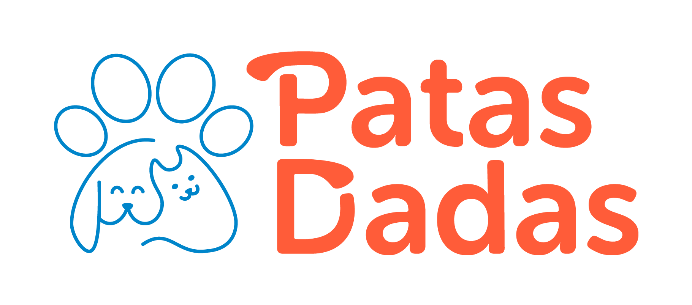 Resgatar animais em situação de abandono, proporcionando o atendimento veterinário necessário até estarem prontos para a adoção, buscando conscientizar a população da importância da adoção responsável.
SAIBA MAISLIXO ZERO

Temos como objetivo difundir o conceito lixo zero no Brasil e acreditamos que podemos mudar a nossa sociedade através a mudança de comportamento quanto ao consumo e a responsabilidade pelos resíduos provenientes dele. E fazemos isso através de movimentos, palestras, fóruns e eventos.
SAIBA MAISFASHION REVOLUTION
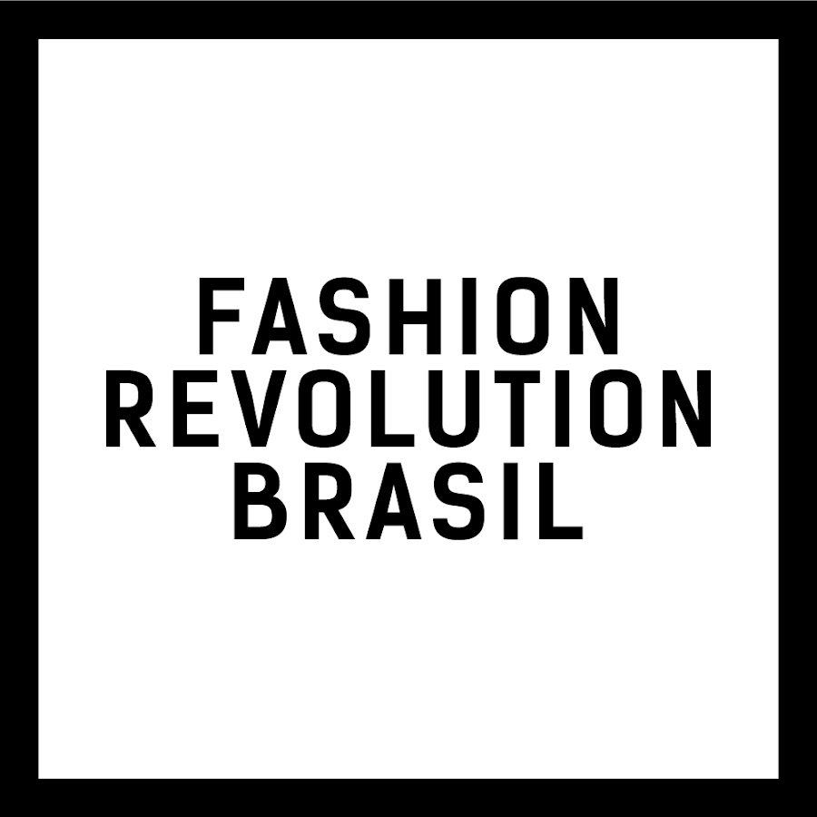Somos um movimento global que trabalha para que a moda conserve e restaure o meio ambiente, valorizando as pessoas acima do crescimento e do lucro.
SAIBA MAISRESTAURA BRASIL
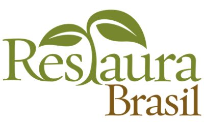Do seu histórico trabalho de aquisição de terras às suas pesquisas pioneiras, que influenciam políticas globais, a TNC está constantemente se adaptando, para dar conta dos maiores desafios do planeta. Nossa visão é a de um mundo onde a diversidade da vida prospere e onde as pessoas atuem para conservar a natureza, por ela mesma e pelo seu valor para a humanidade.
SAIBA MAISFale conosco
AVISO
O projeto não tem ligação com nenhuma ONG específica. É um projeto voluntário que busca dar visibilidade às entidades que realizam algum trabalho social. A lista de ONGs é atualizada a cada três meses para dar visibilidade às diferentes instituições. Não recebemos doações nem fazemos parcerias com nenhuma organização.